Problem statement
Operators offloading chemical tankers at the ANS offloading point had no safe way to reach the manhole on top of the tanker. They were working at height beside a catchment pit and V-drain, with no platform, handrails or protection from vehicles.
Scope
What I was asked to deliver
Design and detail a fixed steel access platform with a stair, its concrete plinths and holding-down bolts, and the site and civil layout around it. Produce fabrication shop drawings for every member so the platform could be built straight from the drawings.
Solution
How I solved it
- Set the 3.0 × 1.15 m grating deck at +3.43 m to suit the tanker manhole height, with handrails all round.
- Used a 38° stair with FRP treads and handrails on both sides for safe access with hands free.
- X-braced the galvanised frame on all faces so it stays stiff with simple bolted connections. PFC160 × 65 beams and stringers and L100 × 100 × 10 columns, all in S355JR.
- Placed the 800 × 1 070 reinforced plinths clear of the catchment pit and V-drain, fixed with M20 grade 8.8 holding-down bolts. Concrete to SANS 10100-1, detailing to SANS 10144.
- Added an Armco barrier to SANS 1350 to protect the structure from tanker impact.
- Drew ten shop drawings, with material lists for the two stringers, three columns and five beams.
3D model
Watch it go together
Build sequence
Drag to orbit · scroll or pinch to zoom · right-drag to pan
Drawings
Plans, elevations & sections
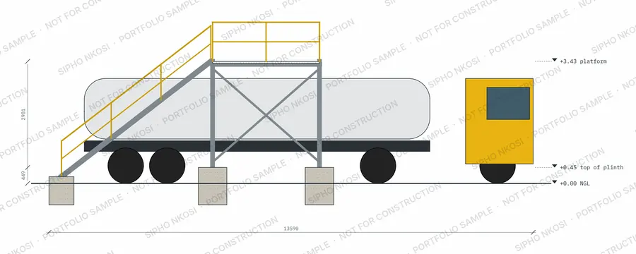
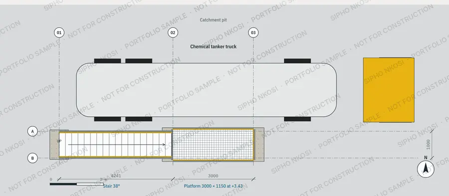
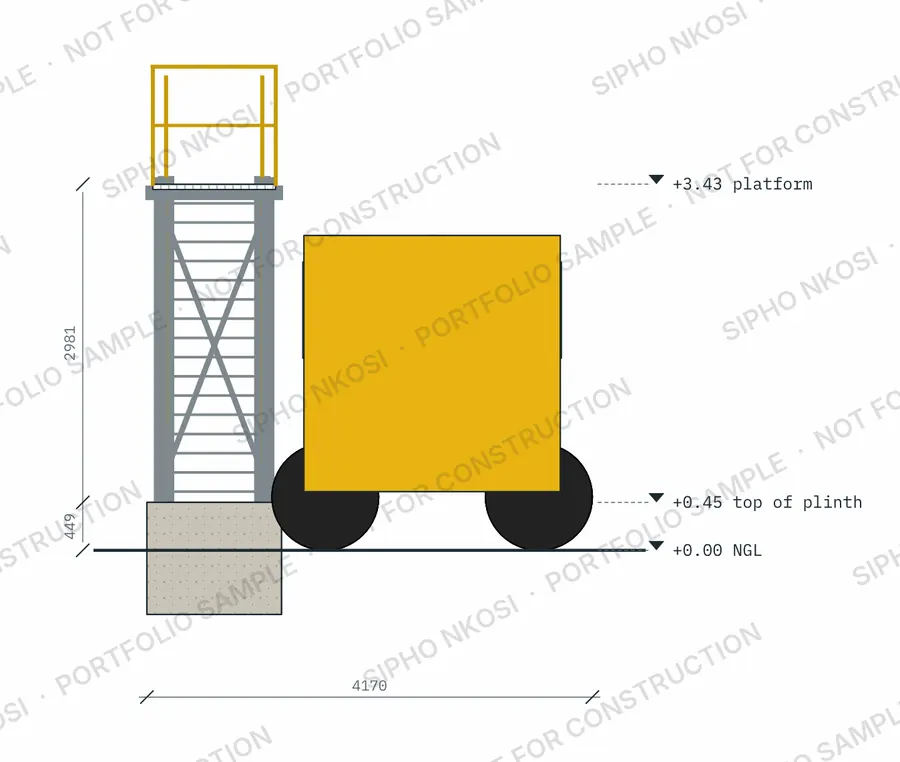
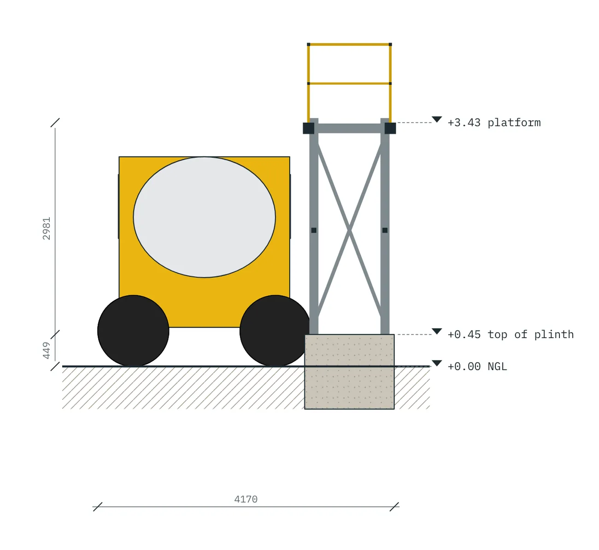
Drawing set as issued
The original fabrication & construction sheets
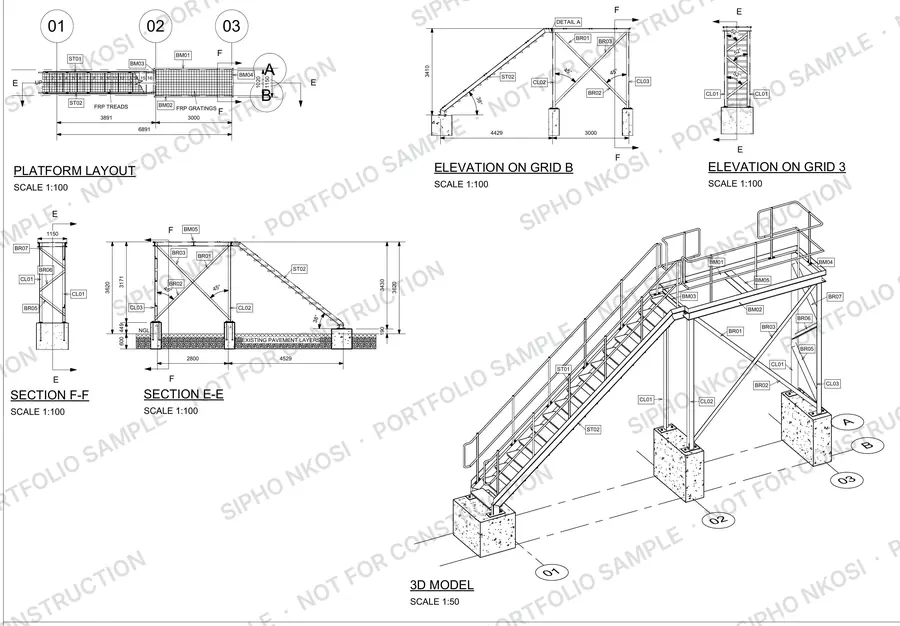
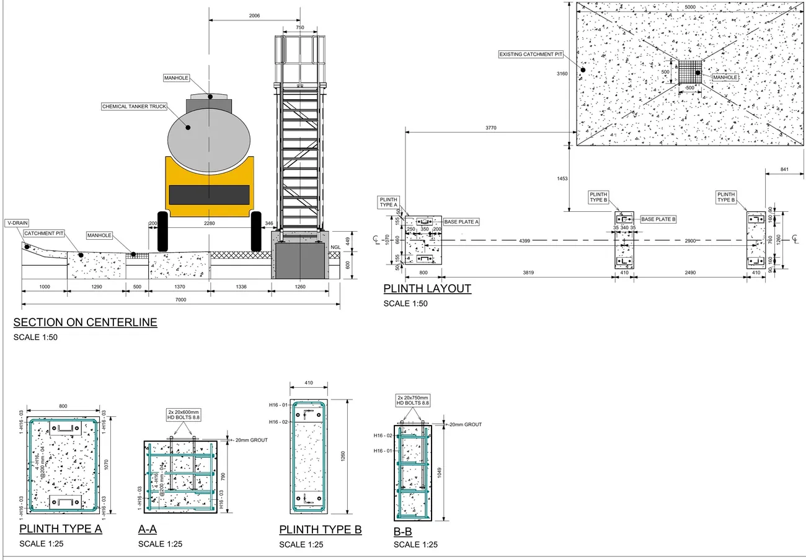
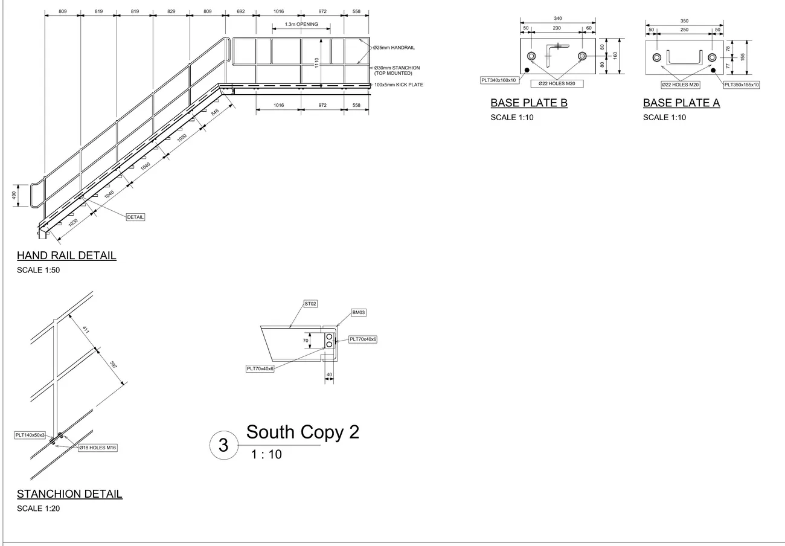
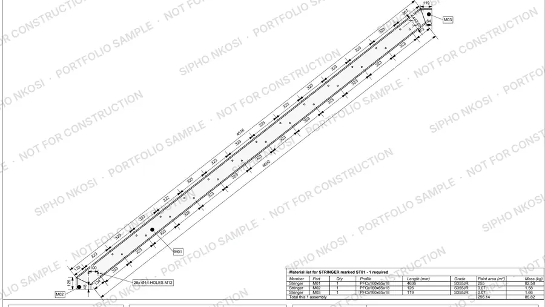
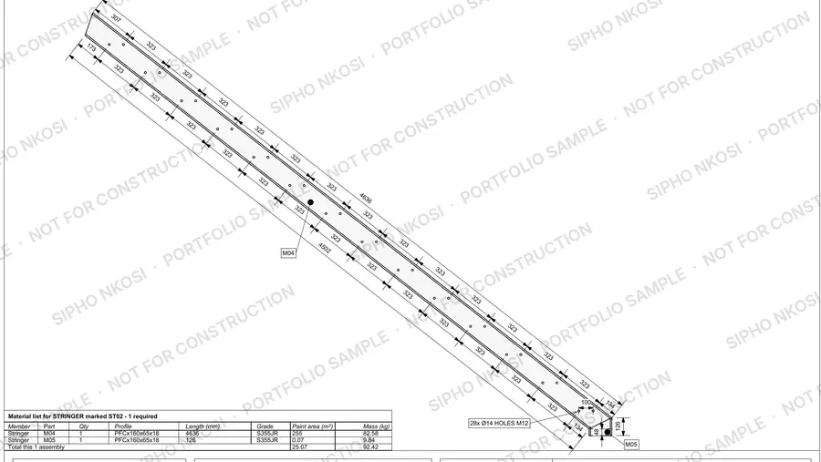
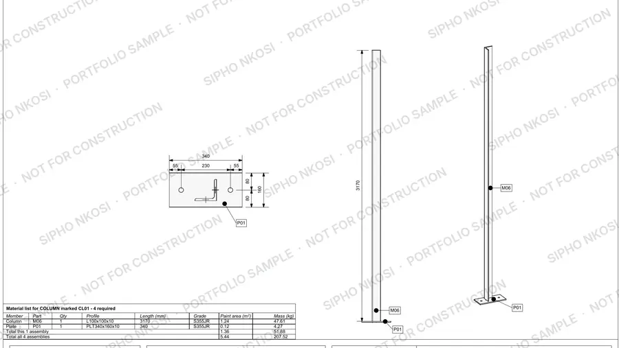
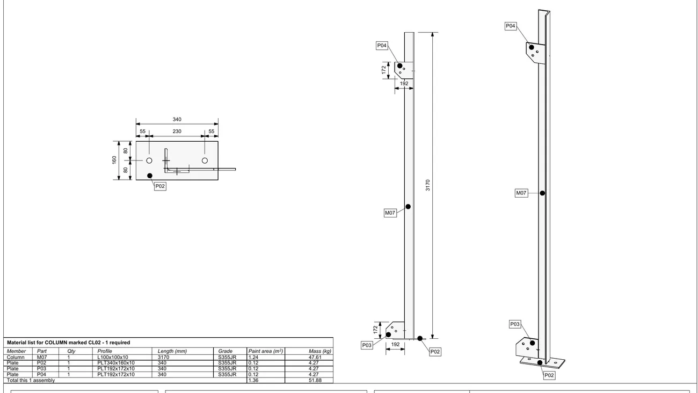
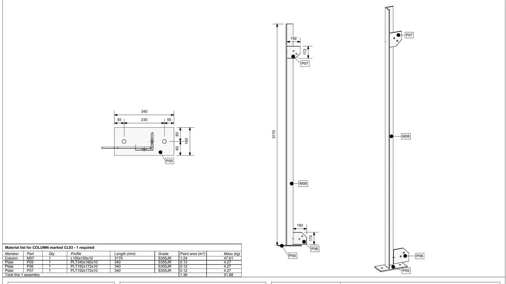
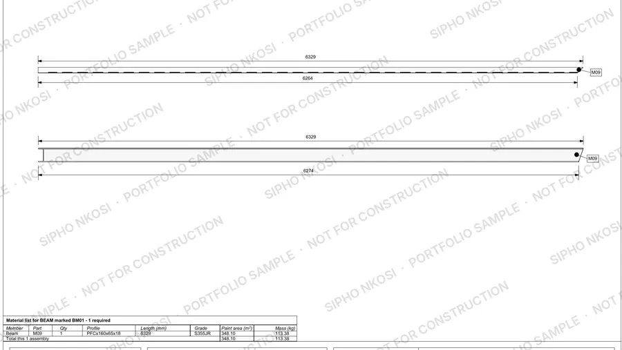
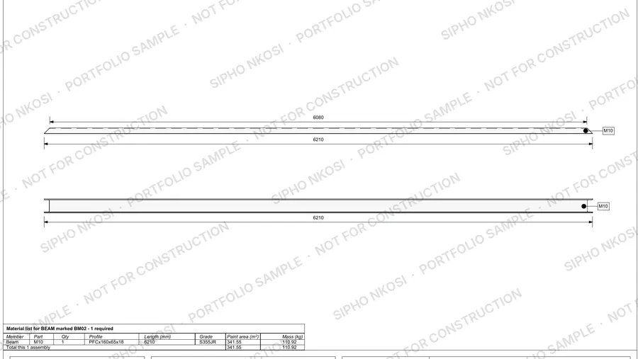
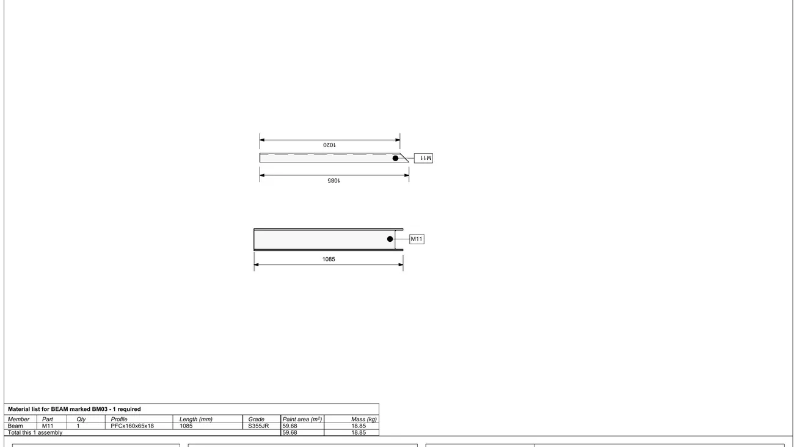
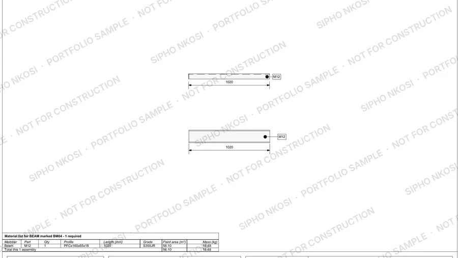
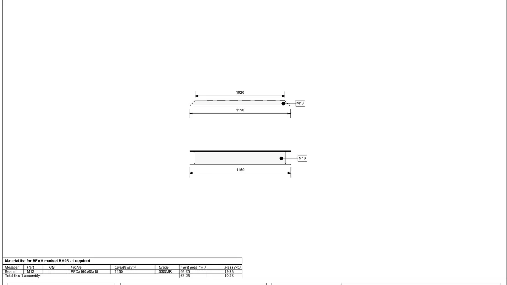